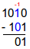
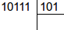

Vous avez toujours rêvé d'additionner des nombres en binaire ? Alors ce tutoriel est fait pour vous ! ^^
En effet, vous allez apprendre ici à effectuer manuellement des opérations mathématiques avec des nombres binaires.
Avant de commencer il peut être utile (mais pas obligatoire) de savoir convertir un nombre décimal en binaire et inversement. Pour cela, n'hésitez pas à vous reporter au tutoriel de Dentuk.
Avant de commencer, sachez que tous les exemples que je donnerai par la suite seront faits avec des char car je suis une feignasse et écrire un int en binaire est trop long. Cependant, ce que vous allez apprendre ici fonctionne avec tous les types de variables gérant des entiers (char, long, int) mais pas avec les variables acceptant aussi les nombres à virgule (float, double). En effet, ces derniers ne sont pas codés de la même manière :
- Les variables pour les entiers sont codées en binaire en utilisant tous les bits pour donner la « valeur » du nombre.
Plan de Char
Ainsi un char qui est (en théorie) codé sur 8 bits pourra avoir 256 (28) valeurs différentes.
- Par opposition, les variables gérant les nombres à virgule utilisent une partie des bits pour donner la « valeur » du nombre et le reste pour donner la position de la virgule.
Par exemple, pour un nombre codé sur 32 bits (float) :
Plan de nombre à virgule
Les bits 0 à 22 servent à coder le nombre sans tenir compte de la virgule (3616.999 s'écrit donc 3616999). Les bits 23 à 30 servent à donner l'exposant (la position de la virgule, quoi
;)
). Le bit 31 sert à préciser le signe.
Si vous êtes curieux et que vous voulez en savoir plus : RTFM.
:p
Enfin, il faut savoir que ce tutoriel utilise deux notations pour indiquer les bases et les opérations.
La base d'un nombre est indiquée entre parenthèses et en indice, cela permet d'éviter toute confusion. Ainsi, 11(10) est le nombre 11 en décimal et 11(2) est le nombre 11 en binaire.
Les signes opératoires sont les symboles que l'on trouve sur le pavé numérique du clavier. Ce sont le plus (+) pour l'addition, le moins (-) pour la soustraction, l'astérisque (*) pour la multiplication et la barre oblique (/) pour la division. Cependant, avec l'utilisation de la balise math, le signe multiplicatif est la croix traditionnelle.
<math>3_{(10)} \times 6_{(10)} = 18_{(10)}</math>
Exemple : 2_{(10)} imes 3_{(10)} / 6_{(10)} = 1_{(10)}
Écrire -1, c'est possible !
Bien... Et si nous commencions le cours ?
Si vous avez lu le tutoriel de Dentuk sur la conversion décimal/binaire, vous devez savoir que 1 s'écrit 0000 0001.
Mais savez-vous écrire -1 ?
Pour le savoir, on a deux méthodes : une simple que vous allez aimer et une plus compliquée que vous utiliserez.
Voici la méthode simple. On sait que 0 - 1 = -1 donc :
Soustraction de 1 par 0
Si ce n'est pas clair pour vous, vous pouvez imaginer que 0000 0000 = 1 0000 0000 mais que le 1 « dépasse » de la variable donc qu'on ne l'écrit pas. Parbleu ! Mais alors, -1 s?écrit de la même manière que 255 ?! Eh oui, c'est pour cela qu'il faut bien comprendre la différence entre les nombres signés et les autres.
Si vous êtes perdu, passez à la partie suivante qui parle des additions et soustractions, cela sera peut-être plus clair après.
Ça va, vous suivez ?
J'espère que oui, car voici la méthode plus compliquée ! :pirate:
Attends ! Pourquoi utiliserait-on une technique plus dure si on connaît celle-ci ? On ne va pas se compliquer la vie pour rien !
Excellente question ! Eh bien tout simplement parce que la méthode plus compliquée permet de travailler aussi bien sur des petits nombres que sur des grands. Non pas que cette méthode ne puisse pas, mais essayez de trouver l'équivalent binaire de -19 de tête :
Soustraction impossible de 19 par 0
Personnellement, j'ai un peu de mal.
La méthode compliquée (aussi appelée complément à deux) :
Tout d'abord, vérifiez que le nombre à convertir en binaire est négatif. Si le nombre est positif, pas de souci, vous savez normalement le faire.
Si le nombre est négatif (par exemple -19) :
On convertit sa valeur absolue en binaire. Dans notre cas, on écrit donc 19 en binaire : 19_{(10)} = 0001 0011_{(2)}.
On inverse tous les bits du nombre : les 0 deviennent des 1 et inversement. 0001 0011_{(2)} devient 1110 1100_{(2)}.
On ajoute 1 au résultat précédent :
Ajout de 1 à l'inversion des bits du nombre
-19_{(10)} = 1110 1101_{(2)}. Voilà ! C'était pas trop dur, avouez ! C'est juste un peu plus long.
Petit détail
Voici un tableau représentant l'équivalent décimal de la valeur des variables « signées » de type char.
Calcul 5
Comme les nombres négatifs ont toujours un 1 comme bit de poids fort, ils sont représentés au-dessus des nombres positifs dans ce tableau.
Vous constaterez ici que le 0 est considéré comme un nombre positif, donc que ces derniers ne vont que jusqu'à 127 tandis que les négatifs atteignent -128.
Une autre particularité due à cette façon de coder les nombres négatifs est que si une variable atteint le maximum 127 pour un char et qu'elle est incrémentée, elle passera directement à -128, alors que la même chose pour une variable « unsigned » la fait repartir à 0.
Essayez, vous verrez :
#include <stdio.h>
#include <stdlib.h>
int main(int argc, char *argv[])
{
char k = 0;
do
{
printf("%ld\n", k);
k++; //J'incrémente ma variable.
}
while(k>=0);
printf("%ld\n", k); //Tadam !
return 0;
}
Bien entendu, ce problème peut aussi se retrouver dans les calculs si le résultat dépasse la valeur maximale permise par la variable, faites donc attention !
Ne vous en faites pas, on ne va faire que des choses simples, déjà parce que je suis une bille en mathématiques et ensuite parce que les processeurs ne valent pas mieux. (C'est dit sans méchanceté, hein !) ;) Ainsi, les seuls calculs que l'on va aborder seront l'addition, la soustraction, la multiplication et... la division !
Les additions
Commençons en douceur avec l'addition, que vous avez déjà employée si vous avez fait des essais dans la partie précédente.
Table de vérité
On va commencer par définir ce qui s'appelle une « table de vérité ». Cette table de vérité est une liste des différents résultats qu'un calcul utilisant un certain opérateur peut donner :
Calcul décimal
Résultat décimal
Calcul binaire
Résultat binaire
0 + 0
0
0000 + 0000
0000
0 + 1
1
0000 + 0001
0001
1 + 0
1
0001 + 0000
0001
1 + 1
2
0001 + 0001
0010
Exemple
On va faire un exemple : 6 + 14 = 20.
En binaire :
6_{(10)} = 110_{(2)}14_{(10)} = 1110_{(2)}
Bit n° 0 : 0 + 0 = 0
On commence facile. ;)
Bit n° 1 : on tombe sur un cas de retenue. 1_{(2)} + 1_{(2)} = 10_{(2)} donc on met le 0 dans le résultat et on garde le 1 en retenue. Ce qui donne donc :
Bit n° 2 : le calcul est 1_{(2)} + 1_{(2)} mais attention, il ne faut pas oublier la retenue du calcul précédent ! Le résultat donne en réalité 1_{(2)} + 1_{(2)} + 1_{(2)} = 11_{(2)} = 3_{(10)}. On met donc 1 dans le résultat et on garde une nouvelle retenue de 1.
Bit n° 3 : le calcul aurait dû être 0 + 1 mais n'oubliez pas la retenue ! Eh oui ! Le calcul exact est donc 1_{(2)} + 1_{(2)} = 10_{(2)} ; on met donc 0 au résultat et 1 en retenue. Et comme il n'y a plus rien après, la retenue tombe toute seule au résultat. ;)
Eh voilà ! Vous pouvez vérifier que 20_{(10)} = 10100_{(2)}.
Voilà, les additions sont finies. Ce n'était pas si dur, n'est-ce pas ? ;)
Les soustractions
Table de vérité
Voyons d'abord la table de vérité :
Calcul décimal
Résultat décimal
Calcul binaire
Résultat binaire
0 - 0
0
0000 - 0000
0000
0 - 1
-1
0000 - 0001
1111
1 - 0
1
0001 - 0000
0001
1 - 1
0
0001 - 0001
0000
La deuxième ligne est un peu particulière. Je l'explique : quand vous tombez sur un chiffre qui doit se faire soustraire par un plus grand que lui, vous prenez une dizaine à gauche du chiffre pour pouvoir soustraire. ;) Par exemple, quand vous faites :
5 - 8 n'est pas facile à réaliser. Mais si l'on prend 15 - 8, c'est tout de suite plus simple. ;) On a ainsi 15-8=7. Il faut cependant que l'on retire une dizaine à 45 car on en a pris une pour effectuer l'opération précédente, ce qui nous donne :
Et maintenant, il ne nous reste plus qu'à effectuer la soustraction des dizaines :
3 - 2 = 1 donc 45 - 28 = 17
Eh bien, en binaire, c'est pareil : vous prendrez une paire (paire en binaire, dizaine en décimal) au bit supérieur à l'instar du décimal lorsque vous prenez une dizaine. Vous mettrez ensuite ce qu'il reste dans les unités.
Exemple simple
Un petit exemple pour mettre ça en pratique.
15_{(10)} - 6_{(10)} = 9_{(10)}
C'est une soustraction très simple :
Bit n° 0 : 1 - 0 = 1
Bit n° 1 : 1-1=0
Bit n° 2 : 1-1=0
Bit n° 3 : 1 - 0 = 1
Ce qui donne :
On vérifie : 9_{(10)} = 1001_{(2)} ! Nous n'avons pas eu le cas de l'emprunt de dizaine mais il va bien falloir faire un exemple plus compliqué. :D
Exemple plus difficile
10_{(10)} - 5_{(10)} = 5_{(10)}
1010_{(2)}-101_{(2)}=101_{(2)}
On commence avec 0 - 1. Vu que c'est impossible, on va aller emprunter une paire à gauche. Donc cela donne 10_{(2)}-1_{(2)} et c'est bien plus réalisable ! Le résultat étant 1, on l'inscrit et hop, c'est fait. :)
Maintenant, le bit n° 1 : on a un 1 qui s'est soustrait à droite, donc il n'y est plus. On a donc 0 - 0 et euh... le résultat est évident. :D Sur le dessin, vous pouvez voir que la disparition du 1 est marquée avec une paire en rouge : c'est le -1.

Enfin, on retrouve la même situation qu'au bit n° 0 : 0 - 1. On prend donc le 1 de gauche et ça donne : 10_{(2)}-1_{(2)}=1_{(2)}.
Eh voilà, c'est fini. Vous pouvez vérifier que 5_{(10)}=101_{(2)}. Si vous avez compris comment ça marche, vous n'aurez pas de soucis avec les divisions ! :o
Vous savez maintenant additionner et soustraire. Mais que pensez-vous de multiplier ou diviser des nombres... en binaire ?!
Multiplications
Table de vérité
En comparaison des soustractions, les multiplications en binaire sont très simples. Voici leur table de vérité :
Calcul décimal
Résultat décimal
Calcul binaire
Résultat binaire
0 imes 0
0
0000 imes 0000
0000
0 imes 1
0
0000 imes 0001
0000
1 imes 0
0
0001 imes 0000
0000
1 imes 1
1
0001 imes 0001
0001
Ça a l'air simple, n'est-ce pas ? Cela est dû à la simplicité de la base 2. En effet, les seules multiplications à effectuer sont par 0 ou par 1. Finis les méchants « 8 fois 34 » qu'on a pu vous sortir au collège. Avec le binaire, tout est relativement plus simple.
La table de vérité est très simple mais pour les calculs, il y a un détail qui peut réduire à néant votre multiplication si vous le négligez. Il va donc falloir être prudent.
Il faut cependant faire attention au décalage qui peut tout fausser. :colere2: Nos résultats sont justes mais la différence entre ces deux calculs est que l'on ne les a pas effectués dans la même colonne (donc ils n'ont pas le même exposant). C'est donc de ce décalage qu'il faut se méfier.
En images, cela sera sûrement plus clair. ;)
Dans l'ordre, on fait 11 imes 0 et on écrit le résultat dans la colonne par laquelle on a commencé (ici, la première). Vient le tour du {11} imes{1}. Mais ce calcul a été commencé à partir de la colonne du 1 donc de la deuxième. Ce décalage fait que l'on doit inscrire le résultat dans la bonne colonne, sinon, tout est fichu !
Et enfin, il suffit simplement d'additionner les résultats en faisant attention à ce sacré décalage. ;)
Constat
On peut remarquer que : 11_{(2)} imes 10_{(2)} = 110_{(2)}11_{(10)} imes 10_{(10)} = 110_{(10)}
Le calcul donne le même résultat dans les deux bases ! L'avantage du binaire est qu'il n'y a que deux chiffres, 1 et 0. Multiplier par 1 ou 0 est assez simple. Dans cette logique on peut multiplier par 10 aisément. Si je vous demande de calculer {1011010} imes{10}, vous y arriverez en quelques secondes.
Mais alors pourquoi se casser la tête avec ta méthode ?
Il y a une bonne raison pour laquelle cette méthode peut poser problème : cette technique sera plus compliquée pour une multiplication par 11 voire pire ! Imaginez devoir faire le calcul suivant de tête :
Facile, vous croyez ? :D Je vous conseille donc de garder notre méthode, le résultat sera correct. Cependant, pour les multiples de 10, faire un calcul de tête reste très aisé. ;)
Il est maintenant temps de passer aux divisions !
Divisions
Principe de la division euclidienne
Ah ! le gros morceau ! :D
Je ne mets pas de table de vérité, car dans ce cas je ne la trouve pas vraiment utile : on ne parle ici que de la division euclidienne, qui est en fait une suite de soustractions (comme la multiplication est une suite d'additions, d'ailleurs).
De toute manière, les calculs en binaire utilisent les mêmes méthodes que ceux en base 10, alors il suffit (en théorie) d'avoir été sage à l'école primaire pour pouvoir se débrouiller.
Exemple
On va prendre un exemple pour illustrer : 23 / 5. On va déjà le faire en décimal (on commence doucement :p ). Je vous rappelle rapidement comment ça marche : on veut savoir combien de fois rentre 5 dans 23 et combien il reste à la fin. Pour cela, on retranche 5 une fois, on met une petite barre pour compter une fois dans la zone de droite et ainsi de suite jusqu'à ce qu'on atteigne un nombre trop petit pour le soustraire par 5. ;)
Après plusieurs soustractions, les calculs donnent :
C'est O.K. pour vous ? :) Si c'est le cas, bah... Vous n'aurez aucun mal à le faire en binaire puisque c'est exactement la même chose.
Reprenons notre exemple pour le transformer en binaire.
23_{(10)}=10111_{(2)}
5_{(10)}=101_{(2)}
Ce qui donne :

Maintenant, il s'agit simplement d'enlever 5 jusqu'à ce que le reste soit plus petit que 5, indiquer le reste, le nombre de fois où 5 est rentré dans 23... À vous de jouer !
Correction
On corrige ? Je vous propose de le faire ensemble. :)
Simple soustraction, on n'a pas eu besoin de prendre une dizaine. Je ne veux pas m'étendre sur les opérations donc je les mets en secret pour ceux qui veulent. ;)
Vous avez normalement dû voir cette explication dans la partie sur les soustractions mais un exemple bien concret comme celui-ci ne vous fera pas de mal. :-°
Voyons cela bit après bit :
Bit n° 0 : ça commence fort ! 0 - 1 ! Comme vous avez sûrement dû le voir dans la partie précédente, le 0 va devoir emprunter à gauche un 1 pour pouvoir soustraire. Ainsi, ce sera plus simple pour lui. On a donc : 10_{(2)} - 1_{(2)} = 1_{(2)}.
Bit n° 1 : on n'a pas trop le choix : le 0 soustrait un 0 et cela donne un 0. :D
Bit n° 2 : si vous avez bien suivi, vous voyez que le bit n° 2 est un 0 qui doit soustraire un 1. Il va donc pour cela prendre une paire (cela correspond à une dizaine en décimal) à gauche... Mais à sa gauche, il y a un 0 ! o_O On entre dans une véritable chaîne. Le 0 (bit n° 2) va prendre une paire au 0 à gauche (bit n° 3) qui va lui même prendre une paire à gauche (bit n° 4). :o
Je vais maintenant vous donner une astuce qui vous rendra la vie plus facile. Arrivé au bit n° 2, oubliez les bits d'avant (0 et 1). Que voyez-vous ?
Je pense qu'il est temps que l'on parle de la méthode tricherie. :p À vrai dire, c'est une méthode que j'emploie souvent car elle m'évite de faire des calculs impossibles. Cette méthode consiste à déduire le résultat binaire de la soustraction grâce à son résultat décimal.
Ici, on savait que le résultat allait être 3. Il nous suffisait donc de convertir ce nombre en binaire :
3_{(10)} = 11_{(2)}
On ne se préoccupe pas de savoir quels calculs il faut effectuer et on oublie pour toujours momentanément les emprunts.
Nous en avons fini avec les calculs. ^^ Pour terminer l'opération, il nous faut écrire l'équation du calcul.
Équation du calcul
Si vous regardez dans l'image du dernier calcul, vous pouvez voir que l'on a compté quatre fois le nombre 5 dans 23 avec un reste de 3. Soit l'équation :
4_{(10)} imes 5_{(10)}+3_{(10)}=23_{(10)}
Et donc, en binaire :
100_{(2)} imes 101_{(2)}+11_{(2)}=10111_{(2)}
Si vous avez compris tout cela et que vous arrivez à le refaire, les divisions n'auront plus de secret pour vous.
Ce tutoriel aurait pu s'achever ainsi, vous laissant à vos divagations binaires. Cependant, il nous reste quelques détails à régler avant de se dire au revoir. :)
Petit exemple avec une multiplication très simple :
3_{(10)} imes (-4)_{(10)} = -12_{(10)}
Un bébé pourrait la faire... Un bébé qui aurait lu ce tutoriel ! :lol:
3 est plutôt simple à convertir étant donné qu'on l'a converti au moins trois fois dans tout le tutoriel. :-°
3_{(10)} = 11_{(2)}
Pour -4, il va falloir utiliser la méthode apprise dans la première partie de ce tutoriel. Reportez-vous y. ;)
-4_{(10)} = 1111 1100_{(2)}
Le calcul est donc :
Je vous ai même épargné les calculs.
Lorsque le résultat occupe un nombre de bits plus important que les membres de l'opération (comme au-dessus, par exemple), il faut enlever les bits en trop en commençant par ceux de poids forts (ceux de gauche). Bien sûr, si votre résultat est trop grand pour la variable et que vous supprimez les bits supplémentaires, il ne sera plus exact. Pour éviter cela, n'hésitez pas à écrire vos nombres avec un grand nombre de bits.
La calculatrice
Pour ne pas avoir à calculer de tête à chaque fois, utilisez donc la calculatrice de votre ordinateur en mode binaire.
Pour Windows
Sous Windows, la calculatrice se trouve dans les Accessoires depuis Programmes. Allez dans Affichage, choisissez Scientifique puis Bin. Vous pouvez faire de simples conversions : tapez votre nombre dans la base souhaitée (hexadécimale, décimale, binaire ou même octale :-° ) puis sélectionnez une autre base, soit via les boutons, soit via le menu déroulant et votre nombre est automatiquement traduit ! Magique, n'est-ce pas ? :magicien:
On peut voir ici le nombre 171_{(10)} en base binaire, sous Windows Vista.
Pour Linux
Sous Linux il y a plusieurs calculatrices mais avec celle de base, qui se trouve dans le menu Accessoires, le principe est similaire à celui de Windows : Affichage, Programmation puis la base.
Sous Ubuntu 9.10, la calculatrice nous montre le nombre 82_{(10)} également sous sa forme binaire.
Pour Mac OS
Il faut passer en mode programmeur dans le menu « Présentation », ce qui permet :
d'utiliser la calculatrice en décimal, octogonal ou hexadécimal et d'obtenir immédiatement la conversion en binaire dans le cadre du dessous ;
d'entrer des nombres en binaire en cliquant sur les 0 ou 1 du cadre (la conversion dans la base souhaitée s'affiche au-dessus) ;
de connaître le caractère Unicode ou ASCII correspondant au nombre entré, il s'affiche en haut à gauche.
Sous Mac OS, la calculatrice nous indique le nombre 32577_{(10)} et plus bas son équivalent binaire : 111 111101000001_{(2)}.
Ainsi s'achève ce tutoriel. Vous savez désormais additionner, soustraire, multiplier et diviser des nombres en binaire ! Vous allez désormais pouvoir impressionner vos proches avec les connaissances que vous avez acquises ici. Bonne continuation ! :)